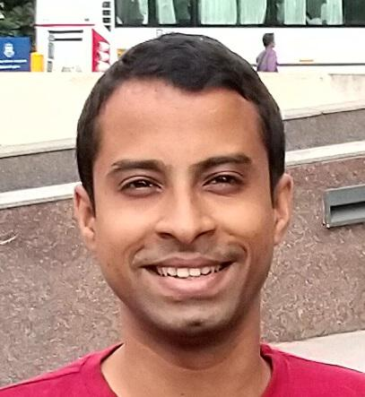
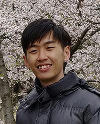
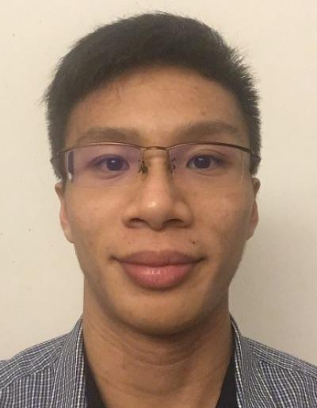
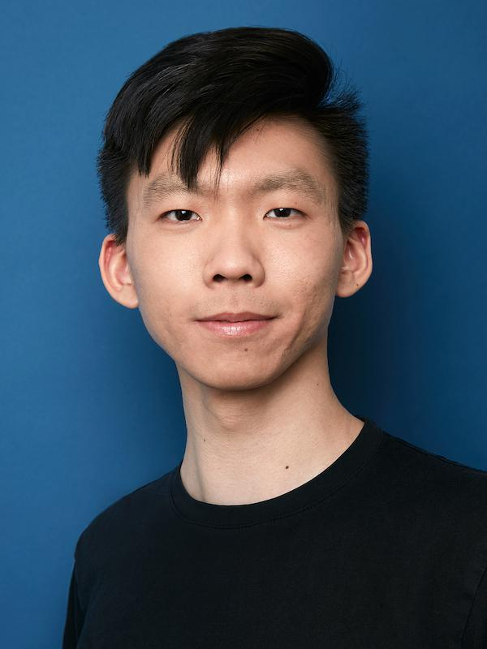
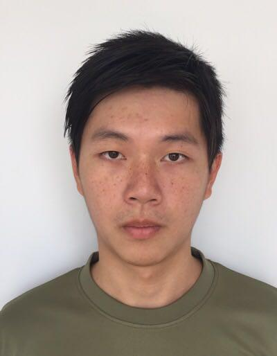

Lab Members
Bharath Ramesh, Senior Research Fellow
Bharath's main research interests include pattern recognition and computer vision. At present, his research is centered on event-based cameras for autonomous sensing and navigation. This includes tracking and recognition with an array of sensors, most importantly event-based cameras, to be processed efficiently on low-power devices to yield accurate results at real-time. In the past, he has mostly worked on object recognition and related areas such as scene understanding, face recognition, and object detection. He received the B.E. degree in electrical & electronics engineering from Anna University of India in 2009; M.Sc. and Ph.D. degrees in electrical engineering from National University of Singapore in 2011 and 2015 respectively, working at the Control and Simulation Laboratory on Image Classification using Invariant Features.
Personal website, Google ScholarSumit Bam Shrestha, Research Scientist

Sumit Bam Shrestha received his PhD from School of EEE, Nanyang Technological University, Singapore. His research is mainly focused supervised learning in Deep Spiking Neural Networks and their application to event based vision, event based audio tasks as well as for configuring neuromorphic hardware. His research interests also include Deep Learning, Machine Learning, Image Processing and Pattern Recognition.
Google Scholar, Research GateFabien Colonnier, Research Scientist

Fabien received his MSc in automotive engineering with a speciality on embedded systems from the ESTACA engineering school in 2012 and his PhD degree in bio-robotics from the Aix-Marseille University in 2017, both in France. He was early interested in autonomous vehicles and robots. An opportunity to work on bio-inspired vision attracted him. His research on the fly’s compound eyes made him realize how impressive these insects are (he does not swat them anymore, except mosquitos which are really annoying!). His current research interests include bio-inspired vision, event-based camera, computer vision and their applications to aerial and ground vehicles.
Google ScholarAndrés Camillo Ussa Caycedo, Research Assistant
Andrés received his MSc from TU Kaiserslautern and University of Southampton in Embedded Computing Systems. His previous research experience has been focused on embedded systems design and machine learning applications. He had a short experience as a Software/Hardware Developer for consumer electronics.
Google ScholarLow Weng Fei, Research Intern
Weng Fei is currently completing his final year of BEng (Computer Engineering) in the National University of Singapore. He is also an active member of Team Bumblebee, which is a student-led multi-disciplinary project team that designs and builds autonomous maritime vehicles. He is currently working on SLAM using event based cameras.
Fu Chuanrong Gideon, Research Intern
Gideon is currently completing his final year of BEng (Computer Engineering) in the National University of Singapore. He is currently working on low-power vision system for object classification and tracking.
Khor Ru Shan, Research Intern
Khor Ru Shan is a final year BEng (Computer Engineering) student at the National University of Singapore. He has experience with FPGA programming and designing low-power wearable systems, and is interested in novel computer architectures. At NUS Neuromorphic, he is working on a low-powered neuromorphic vision system.
Lim Kangjie Jonathan, Research Intern
Jonathan is in his final year of perusing a degree in BEng (Computer Engineering) in the National University of Singapore. He is working on Event-Based Motion Estimation.
Former Lab Members
| Mohit Sarin | Research Intern | finishing his Bachelor's at NIT Raipur |
|---|---|---|
| Chockalingam Senthil Rajen | Research Intern | finishing his Bachelor's at NIT Trichy |
| Garrick Orchard | Senior Research Scientist, founder of the Lab | (personal website) |
| Luca Della Vedova | Associate Scientist | (personal website) |
| Chen Yu | Associate Scientist | now at IBM, Singapore |
| Yang Hong | Associate Scientist | still in T-lab |
| Cedric Seah | Adjunct Research Scientist | returned to focus on his main position with ST Engineering |
| Yongsheng Sang | Visiting Research Scientist | returned to his lecturer position at Sichuan University, China |
| Balakrishna Deverakonda | Research Associate | now working at NTU, Singapore |
| Zhen Xie | Visiting Student | obtained his PhD from Zhejiang University of Technology. Now working for Ali-cloud |
| Rong Xiao | Visiting Student | pursuing her PhD at Sichuan University, China |
| Sherine Rose | Research Associate | |
| Amirezza Yousefsadeh | Visiting Student | now pursuing his PhD at University of Sevilla, Spain |
| Lennart Walger | Visiting Student | (personal website) |
| Beeren Sahu | Visiting Research Scientist | continuing work at SRM Bangalore |
| Satish Vithanala | Visiting Research Scientist | continuing work at SRM Bangalore |
| Sharad Sinha | Research Scientist | (personal website) |
| Sahar Hosseini | Visiting Student | pursuing her MS at University of Sevilla, Spain |
| Daniel Czech | Visiting Student | pursuing his PhD at University of Cape Town, South Africa |
| Gregory Cohen | Visiting Student | tenured at Western Sydney University |
| David Reverter Valeiras | Visiting Student | obtained his PhD at University Pierre and Marie Curie |
| Xavier Lagorce | Visiting Student | working for Prophesee |
| Rohan Ghosh | Intern | pursuing his PhD at National University of Singapore |